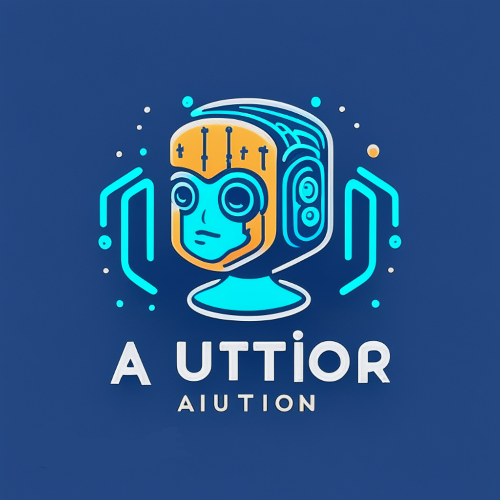

Intro
I'm a data and product analyst with 2+ years at Eli Lilly building analytics products end-to-end — not just the charts, but the pipelines, logic, and interfaces behind them. The kind of thing that turns a 3-day report backlog into a self-serve answer in 30 seconds.
Here's what that's looked like in practice:
- A weekly targeting process that consumed 8 hours now takes 15 minutes
- 40+ neuroscience researchers moved off custom report requests onto a web app I built from scratch
- Chatbots I deployed handle 60%+ of repetitive data queries — so teams spend time on strategy, not copy-pasting spreadsheets
- A DDL validation tool I built cut table standardization time from 30 minutes to 3 seconds, now used by 80+ engineers and analysts
These aren't side projects. They're in production. People rely on them weekly.
The people I build for are commercial teams, clinical researchers, and business stakeholders who need to move fast and trust their numbers. I sit at the intersection of engineering and product — I can write the pipeline in the morning and explain the insight to a VP in the afternoon.
Toolkit: Power BI · Python · SQL · Databricks · Flask · LLMs · RAG Architecture
If you're building something where data needs to do more than sit in a report — let's talk.
Experience
Eli Lilly and Company
Bengaluru, India | Jan 2024 – Present
Consultant – Data Engineering | Dec 2025 – Present
- Engineered a Python/Streamlit DDL validation tool adopted by 20 engineers and 60+ analytics members, reducing table standardization time from 30 minutes to 3 seconds with unlimited batch processing.
- Migrated legacy Redshift ETL pipelines to atomic MERGE-based Delta Lake loads on Databricks across dev/qa/prod via GitHub Actions, eliminating data integrity risks.
- Automated monitoring across 6 pipelines and 11 tables with a scheduled workflow system that evaluates KPIs against stakeholder metrics and auto-distributes tailored reports.
Associate – BI&A Product Analytics | Jan 2025 – Dec 2025
- Automated 85% of a manual weekly targeting process, cutting report generation from 8 hours to under 15 minutes.
- Shipped 4 analytics products to production — omnichannel visualization, patient funnel analysis, and agile tracking tools — each used weekly by 30+ stakeholders.
- Designed reusable Power BI and Python frameworks that cut time-to-insight by 60% and reduced HCP support tickets by 40% via embedded AI chatbots.
- Earned Quarterly MVP recognition for cross-functional leadership on the product development roadmap.
Associate – BI&A Neuroscience Analytics | Jul 2024 – Jan 2025
- Built a full-stack self-serve web application (Flask + PostgreSQL + Power BI) eliminating a custom report backlog for 40+ neuroscience researchers.
- Deployed 3 therapeutic-area chatbots with embedded knowledge bases, handling 60%+ of repetitive queries.
- Standardized BI processes across neuroscience and immunology teams, cutting time-to-insight on recurring analyses by 50%.
Intern – BI&A Immunology Analytics | Jan 2024 – Jul 2024
- Segmented 60,000+ healthcare professionals using clustering and behavioral analysis, improving engagement conversion by 28% across 3 therapeutic programs.
- Replaced manual HCP reports with parameterized Power BI dashboards, cutting report generation time by 70%.
- Lifted pharmaceutical analytics reliability from 82% to 96% through a structured data maturity assessment.
Skills
Analytics & BI
Power BI, SQL, Python (pandas, NumPy, Matplotlib), Databricks, Excel, Data Visualization
AI & Machine Learning
LLMs, RAG Architecture, GPT Fine-tuning, Generative AI, Predictive Modeling, NLP, VectorDB
Engineering & Development
ETL Pipeline Development, Flask, FastAPI, PostgreSQL, Delta Lake, GitHub Actions, Streamlit, Git
Core Competencies
Product Analytics, Business Analysis, KPI Development, Stakeholder Management, Requirements Gathering, Cross-functional Collaboration, Agile, JIRA
Education
Manipal Institute of Technology
Manipal, India
B.Tech in Data Science and Engineering | GPA: 8.27 / 10
Oct 2020 – Jul 2024
Projects
AI Tutor

GPT-3.5 powered teaching assistant that generates questions, provides detailed explanations, and enables interactive learning across machine learning topics. Built with Python and OpenAI API.
Apr 2023 – Sep 2023
Most of my recent work lives inside Eli Lilly's internal systems and can't be open-sourced.
The impact is documented on my LinkedIn
and in my resume.
Contact